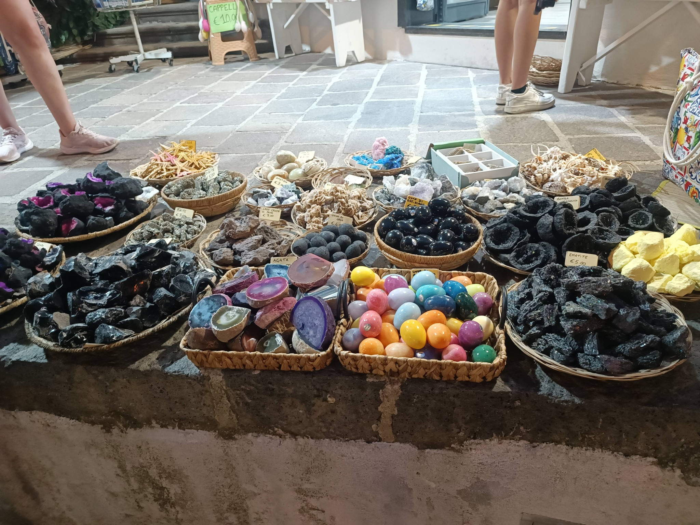
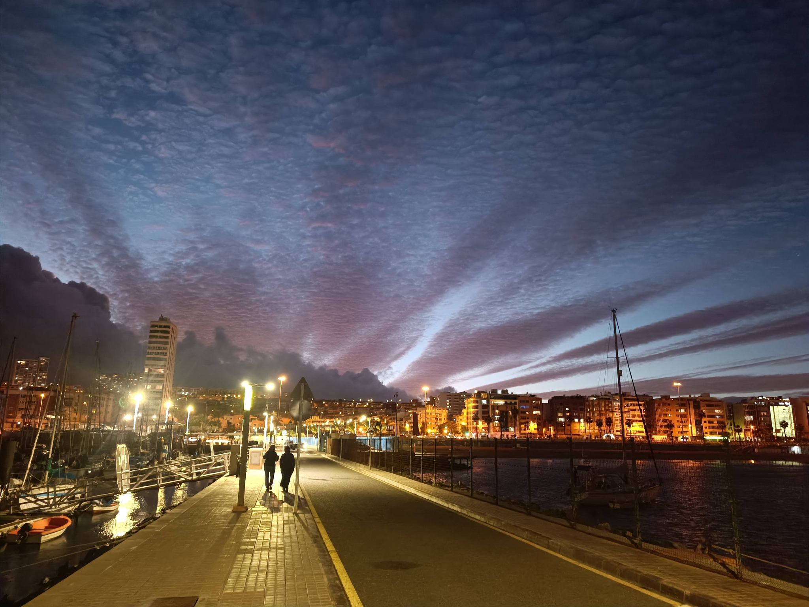
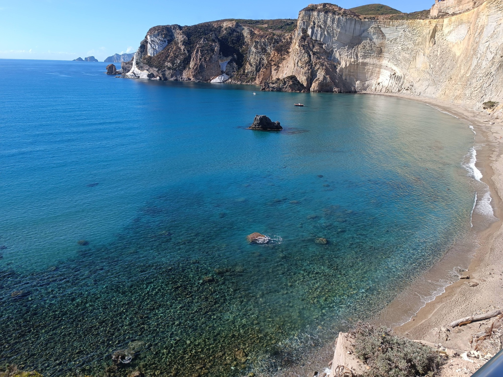
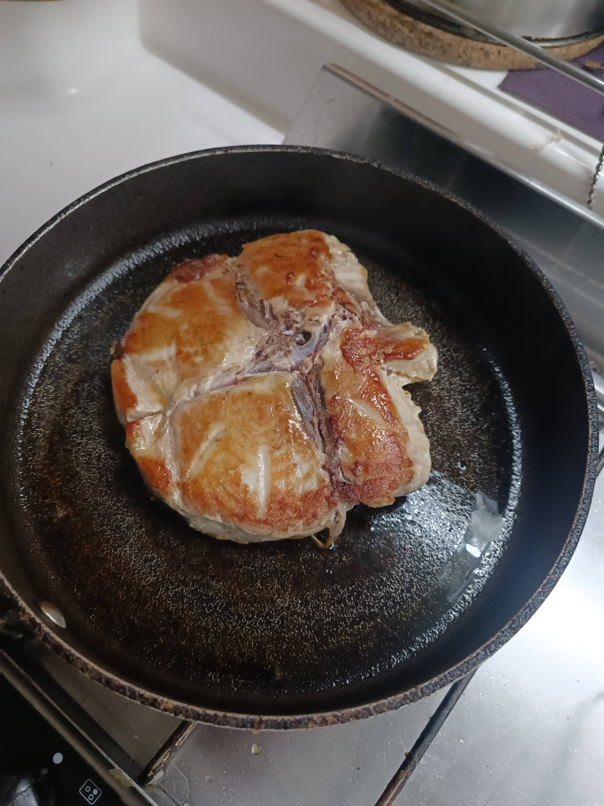
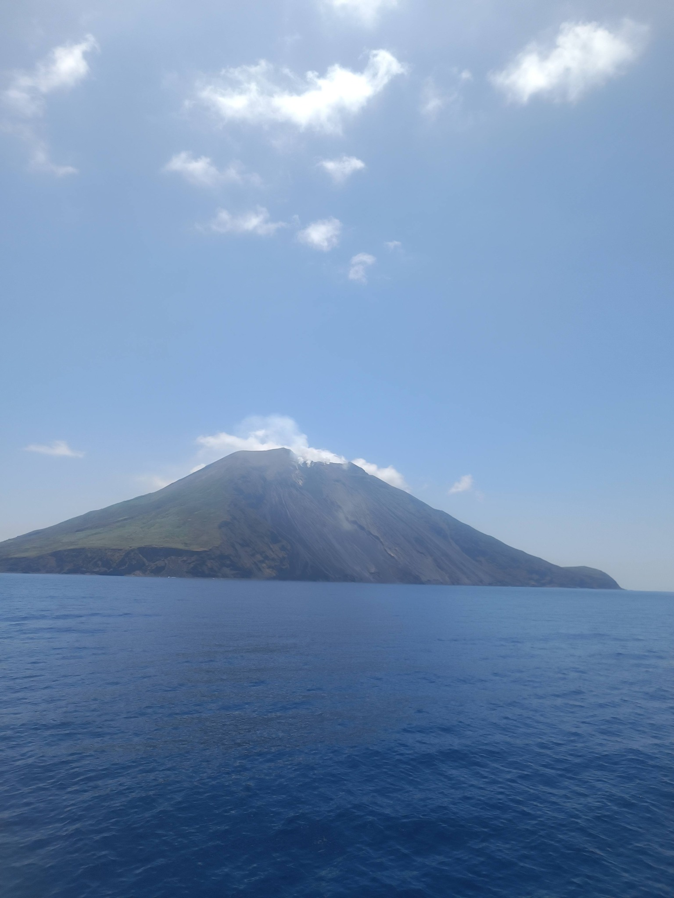
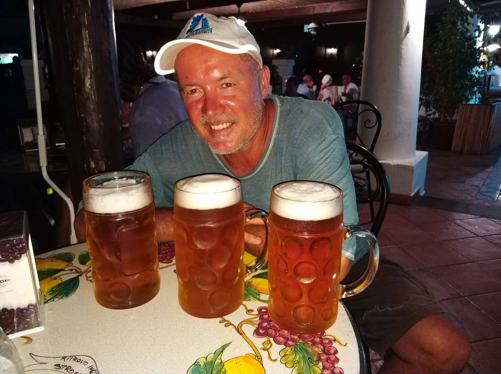
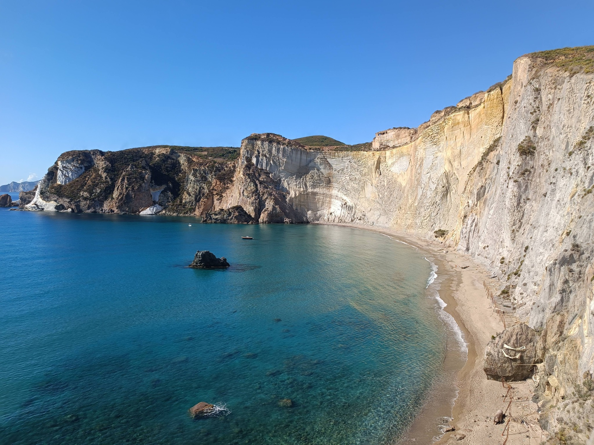
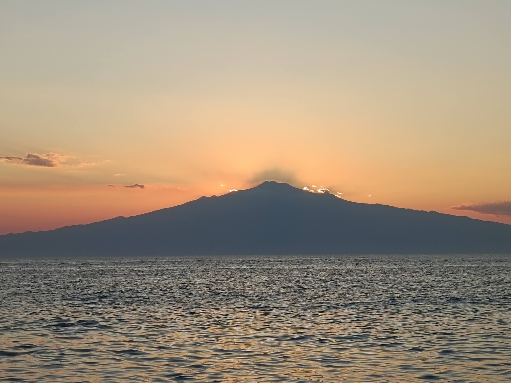

Рим — Мальта: яхтенный маршрут по Средиземному морю
2 мая 2026
Маршрут который запоминается навсегда
В нашей любимой группе хочу поделиться своими эмоциями от яхтенного маршрута Рим — Мальта. Я яхтсмен и давно хожу под парусом. Имея свой парусный катамаран, бывает, что путешествия длятся годами. Но каждый год возвращаюсь в Средиземное море. По пути в Черногорию стараюсь посетить любимые места, которые запомнились от предыдущих путешествий.
Вот один из участков моего маршрута — а именно Рим — Мальта (весной) и Мальта — Рим (осенью) — хочу отметить отдельно.
Рим. Остия. Старт
В Риме я останавливаюсь, конечно, на побережье, в его пригороде. Обычно это морские ворота Рима — Остия или устье реки Тибр. История здесь оживает. До Рима от стоянки лодки полчаса езды. Поэтому на день-два стараюсь выбраться в толпу туристов, сделать свежие кадры Колизея, побродить по улочкам вечного города, зайти в Ватикан…
Обычно в ночь выхожу в сторону острова Понца.
Остров Понца — мистика и гроты
Узнал о нём случайно от своего приятеля и был поражён красотой и мистикой этого острова. Огромные белые скалы ограждают северную и южную якорную стоянку острова, именно поэтому на якорь тут можно встать при любом ветре. На пляж возле якорных стоянок можно попасть только с моря, поэтому пришлых туристов здесь почти не бывает.
Исследуя берег, я обнаружил цепочку небольших гротов, по которым можно проплыть на резиновой лодке с мотором. Высота и ширина гротов позволяют это сделать только в хорошую погоду, когда нет волны. Иначе безопасно туда просто невозможно войти.
А возле якорной стоянки с другой стороны — мистика. Явно рукотворные пещеры, в которые можно заплыть на лодочке, соединены подземными ходами, причём половина пола — камень, а вторая половина — канал с водой, соединяющий бассейны пещер. Предполагается, что это были бассейны для выращивания рыбы. Но есть одно но! Расположены они под кладбищем, в пещерах много выемок на стенах, и всё это производит впечатление, что тут проводились какие-то обряды. Однажды мы набрали много свечей и зажгли их в этих углублениях. Зомби не появились из стен, но было жутковато.
Капри — аристократы и яхтсмены
Далее делаю ночной переход до острова Капри. Это знаменитый итальянский остров, на котором строили дачи ещё древние римские императоры. Дедушка В. Ленин и писатель М. Горький неоднократно здесь бывали — в честь чего их увековечили в памятнике В. Ленину и настенной доске М. Горькому. А где ещё строить планы революции или написать роман «Мать».
Виды с острова открываются действительно потрясающие — даже видно Везувий. Сады, парки, видовые площадки и лестницы, особенно лестница Круппа, впечатляют навсегда.
Меня всегда поражает, как меняется остров вечером. Днём очень много туристов с материка, а с закатом солнца на острове остаются только постояльцы отелей да мы, яхтсмены. Улочки вдруг пустеют, в уютных ресторанчиках возле отелей располагаются на ужин дамы в вечерних платьях со своими кавалерами чуть ли не во фраках с бабочками. Сразу ощущается, что остров — это излюбленное место отдыха аристократии не только в древние времена, но и сегодня.
И вот тут на сцену выходят яхтсмены. Честно говоря, всегда вечером ощущение — не в своей тарелке. Стоимость стоянки на моём катамаране в марине острова составляет, ни много ни мало, 1500 евро за одну ночь. Поэтому исключительно стою на якоре — бесплатно.
Амальфи — рассвет и кофе
С Капри мы обычно заходим в Амальфи. Рассказывать про это побережье нет нужды — и так у всех на слуху. Скажу только, что и здесь есть яхтенная изюминка. Обычно встаю на якорь напротив города. Вид исключительно фотогеничный, и именно со стороны моря получаются самые лучшие кадры. Особенно с рассветом.
А изюминка в том, что пройтись по Амальфи днём — это не удовольствие. Часов с 9 утра огромные толпы туристов с моря на корабликах, а с суши автобусами осаждают город. Это почти как в Венеции: передвигаться можно только в потоке людей. Поэтому самое лучшее время пробежаться по улочкам и сделать фотки — с 7 утра, а к прибытию туристов сесть в открывающейся кафешке и отведать вкусняшек.
Стромболи — восхождение без воды
Следующим местом стоянки обычно о. Стромболи. Точнее, обычно мы проходим мимо и наблюдаем извержение вулкана. Каждые 10–15 минут вулкан выбрасывает в небо раскалённые камни, и они красиво стекают красными полосами в море с крутого склона.
Но как-то раз в компании из трёх мужчин в самом расцвете сил я даже поднялся к вершине. Дело было так: мы стояли на якоре и в бинокль наблюдали за пляжем. Там расположились три очень симпатичные итальянки. Мои приятели были не женаты и сразу засуетились спустить тузик и пойти знакомиться. Я повёз их на берег. Но при ближайшем рассмотрении объектов будущего поклонения оказалось, что они лет на 50 старше нас.
На берег мы уже высадились, поэтому решили пройтись. Увидели вывеску у магазина, где можно было взять оборудование напрокат и подняться к жерлу вулкана. Воду не взяли. Пошли штурмовать вершину.
Никогда не ходите втроём. По мере подъёма каждый из нас по очереди предлагал закончить авантюру и спуститься назад, но, не сговариваясь, двое остальных обзывали его слабаком и упорно шли вверх. Дошли. Спускались уже вечером.
Оказывается, на рекламе внизу были указаны тропинки подъёма и спуска. И мы поднимались там, где спуск, а спускались там, где подъём. Без воды во рту пересохло так, что спасло нас только пиво — в огромных кружках. Причём первая кружка легла в организм как в сухой песок.
Липарские острова и Вулкано
Вообще-то вулкан Стромболи входит в цепочку Липарских островов. Все острова вулканические. Остров Липари — это столица. Ну и вообще, как пройти мимо на катамаране марки Lipari 41 мимо острова Липари. По острову обычно катаемся на квадроциклах или кабриолетах.
А вот на острове Вулкано я бросаю якорь в термальных источниках. Прямо под нами из-под воды идут пузырьки. Горячая вода вдоль берега бьёт ключом из расщелин на дне. Купаться можно недолго: большое содержание сероводорода полезно, но опасно при злоупотреблении.
Мессинский пролив — Сцилла и Харибда
Обычно полдня уходит на переход от Липарских островов в Мессинский пролив. Здесь я впервые видел, как охотятся на рыбу-меч. Смешные кораблики с длинным носом и высокой смотровой башней ходят по проливу и высматривают 2–3-метровых рыбин с носом в виде меча. Попробовать стейки тут можно в любой кафешке.
Особо запоминается водоворот, где смешиваются два моря. Сила природы такая, что катамаран с двумя работающими двигателями крутит как щепку, и часто направление движения не совпадает с курсом, куда направлен нос катамарана, на 90 градусов. Да уж, не зря древние считали, что тут обитают опасные чудовища Сцилла и Харибда, которые даже схватили несколько моряков с корабля Одиссея.
Сиракузы — рынок и кит
Обязательно захожу в Сиракузы. Один из самых любимых городов. Стоим на городской набережной в самом центре города. Потрясающие узкие улочки старого города, много кафе и ресторанов. А утром работает рынок. Вот тут я всегда отрываюсь: итальянские вяленые помидоры и оливки с маслинами беру про запас — до следующего захода сюда.
А на выходе из бухты, милях в 10 от города, мы пару лет назад встретили огромного, длиной больше катамарана, серого кита. Я таких видел только в океане и очень удивился.
Финал — Мальта. Валетта
Завершаем переход на Мальте. Валетта, старый город. Огромная бухта вокруг крепости. Крестоносцы, скалы, фортификационные сооружения, местное блюдо из зайчатины, движение машин не в ту сторону и опять толпы туристов. Очень нравится, но однажды даже от этой красоты устал.
Мы тогда сломались: яхта месяц стояла без пера руля зимой, и мне пришлось нырять в холодную воду в гидрокостюме на три размера меньше, чем надо. Хорошо, ребята догадались — грели воду и заливали мне за шиворот полуторалитровыми бутылками.
А вот сейчас соскучился — опять туда хочется зайти и прогуляться. Уже иду!








Есть места на борт!
У нас ещё есть места на два, без преувеличения, лучших участка всего перехода от Канар до Черногории:
Майорка — Рим
1–10 мая
Пальма, Сольер, Калобра, Менорка, Сардиния, Корсика, Бонифачо, Порто-Черво… и финал в Риме.
Рим — Мальта
11–21 мая
Понца, Капри, Амальфи, Стромболи, Липари, Вулкано, Мессинский пролив, Сиракузы… и Валлетта.
Если вы бывали в этих местах — вы понимаете, о чём я.
Если нет — это как раз тот случай, когда стоит увидеть всё сразу и с моря.
Это не просто маршрут. Это концентрат Средиземки.
Хотите присоединиться?
Пишите — места ещё есть. Такие переходы запоминаются надолго.